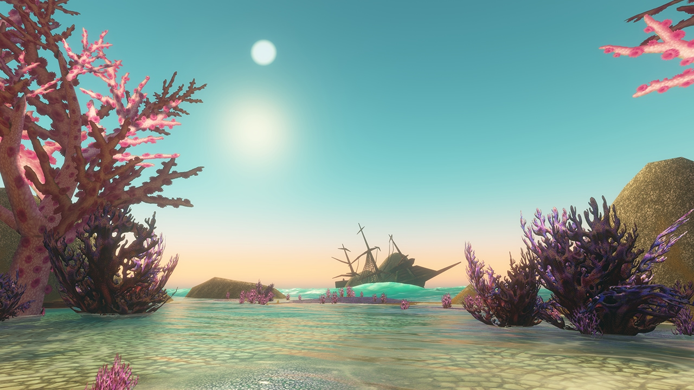

← 返回干货专区
30–40 级地下城任务清单：分本列接取、最低等级与前置 任务与路线 逐项来源 含待核
30–40 级准备跑本，真正容易白跑的是没接前置、把本外目标当本内目标，或拿另一阵营的接点照找。本清单把任务逐条列在正文；有冲突的最低等级与接点直接标待核，不用链接代替内容。
作者 · 刀哥｜数据核对 2026-11-21（Asia/Shanghai）｜资料核对稿，非国服逐项实测

国服官方副本前瞻，沉没之城环境原图；不是任务接点地图。 [官方出处] 怎么用这张出发清单 正文列出 63 条 任务记录（同名阵营版本分列，血色跨翼重复项去重），覆盖诺莫瑞根、达拉然城、剃刀沼泽、沉没之城、血色四翼、剃刀高地，并附克罗多克要塞边界延伸。这是资料清单计数，不是一个角色能全接的任务数。 [来源] [来源] “30–40 级”是出发规划段，不等于所有任务最低接取等级都在此范围。每条标的是来源中的资料最低等级，不是副本硬性入场等级；阵营、职业与前置也要同时满足。外站互相矛盾的值不选一个冒充确定；未列额外前置不等于已确认没有。 出发顺序建议：先在主城与外部地图接前置，检查本外掉落启动项，再进本找护送/书籍/神像。不同队友进度不一致时，先决定是否为任务改路线；不承诺一趟把材料和经验全拿完。 国际服攻略与数据库是本次任务字段依据，未做国服角色逐条接取实测。确定中文名用站内与已核中文记录；新任务、NPC 未确定译名的保留原文。全部关键等级和接点都在同一行附来源，不把外站的 Hard / Easy 推荐档当最低接取等级。 诺莫瑞根：本外任务和传送前置一起查 超级清洁器 5200 型！
双方 · 资料最低 25 级 接取： 超级清洁器 5200 型 ｜本内：诺莫瑞根。
前置 / 提醒： 带 Grime-Encrusted Object 到清洁机器；不等于击杀任务。前置待核（详细资料未列，不等于无前置）。
[任务记录] [等级 / 接点依据] 接取： 脏兮兮的戒指掉落启动｜诺莫瑞根。
前置 / 提醒： 本内黑铁怪物掉落物启动；清洁后还有两阵营版本的戒指归来，交点不同。前置待核（详细资料未列，不等于无前置）。
[任务记录] [等级 / 接点依据] 接取： 大机械师卡斯派普｜铁炉堡。
前置 / 提醒： 需沿多台打孔机升级卡片；别跳过本外的第一台。前置待核（详细资料未列，不等于无前置）。
[任务记录] [等级 / 接点依据] 诺恩
联盟 · 资料最低 待核（两站分别写 20 / 25） 接取： 工匠大师欧沃斯巴克｜铁炉堡。
前置 / 提醒： 目标尖端机器人在副本外通道，别进传送门后才找。前置待核（详细资料未列，不等于无前置）。
[任务记录] [等级 / 接点依据] 达拉然城：先办门禁，再看阵营四条 动乱之源
联盟 · 资料最低 待核（两站分别写 24 / 30） 接取： 大法师茉德拉的影像｜奥特兰克山脉达拉然城外下水道门（按站内，不用外站银松森林）。
前置 / 提醒： 联盟先做南海镇紧急请求链。接取后拿下水道钥匙；具体链看站内门禁页。
[任务记录] [等级 / 接点依据] 饥饿的奥术
联盟 · 资料最低 待核（两站分别写 24 / 30） 接取： 大法师茉德拉的影像｜奥特兰克山脉达拉然城外下水道门（按站内，不用外站银松森林）。
前置 / 提醒： 联盟从紧急请求链解锁；目标分布在本内，勿保证一趟完成。
[任务记录] [等级 / 接点依据] 接取： 大法师茉德拉的影像｜奥特兰克山脉达拉然城外下水道门（按站内，不用外站银松森林）。
前置 / 提醒： 部落先做塔伦米尔入室偷窃等链。接取后拿下水道钥匙；具体链看站内门禁页。
[任务记录] [等级 / 接点依据] 接取： 马丁·费尔本｜幽暗城。
前置 / 提醒： 从构造体收集任务核心；分配与进度可能让队伍需要再来。前置待核（详细资料未列，不等于无前置）。
[任务记录] [等级 / 接点依据] 剃刀沼泽：给后续血色与高地留好任务链 接取： 进口商威利克斯 ｜本内：剃刀沼泽。
前置 / 提醒： 本内护送，终点方向有敌人；别见到就直接开。前置待核（详细资料未列，不等于无前置）。
[任务记录] [等级 / 接点依据] 接取： 赫尔拉斯·静水 ｜本内：剃刀沼泽。
前置 / 提醒： 本内接取后找坠饰；接得晚可能已清完可掉落小怪。前置待核（详细资料未列，不等于无前置）。
[任务记录] [等级 / 接点依据] 沉没之城：八条分阵营查，接点冲突不硬填 接取： 站内：本内接；外站：克拉兹克，藏宝海湾｜接点待核。
前置 / 提醒： 站内为本内接；外站为藏宝海湾，接点冲突待核，未覆盖站内。前置待核（详细资料未列，不等于无前置）。
[任务记录] [等级 / 接点依据] 接取： 站内：本内接；外站：克拉兹克，藏宝海湾｜接点待核。
前置 / 提醒： 站内为本内接；外站为藏宝海湾，接点冲突待核，未覆盖站内。前置待核（详细资料未列，不等于无前置）。
[任务记录] [等级 / 接点依据] Ancient Gurubashi Idol
部落 · 资料最低 30 级 接取： 马祖孔｜穆高尔（站内坐标 32.4, 20.6；外站近似 32.6, 20.6）。
前置 / 提醒： 部落穆高尔马祖孔接，目标神像；不沿用被复制的荆棘谷坐标。前置待核（详细资料未列，不等于无前置）。
[任务记录] [等级 / 接点依据] 接取： 金维莱｜格罗姆高（站内姓名优先，不用数据库“肯维雷”）。
前置 / 提醒： 先做暗礁海与 Locating the Lost City；本外前置需先检查日志。
[任务记录] [等级 / 接点依据] The Only Good Brinescale...
部落 · 资料最低 30 级 接取： 指挥官阿格罗戈什｜荆棘谷。
前置 / 提醒： 暗礁海之后还有前置；外站对 Enemies in the Water / Locating the Lost City 节点记法不一，待核。
[任务记录] [等级 / 接点依据] 血色修道院：跨翼任务只接一条，四翼目标别漏 接取： 虔诚的莱雷恩｜希尔斯布莱德丘陵。
前置 / 提醒： 先做由 Brother Anton 开始的链；目标横跨图书馆、武器库、大教堂。
[任务记录] [等级 / 接点依据] 接取： Magus Olvek｜奥特兰克山脉。
前置 / 提醒： 图书馆杜安房间右侧桌边找书；为本次详细页补充项。前置待核（详细资料未列，不等于无前置）。
[任务记录] [等级 / 接点依据] 深入血色修道院
部落 · 资料最低 待核（两站分别写 33 / 34） 知识试炼
部落 · 资料最低 待核（两站分别写 25 / 26） 接取： Magus Tirth｜千针石林闪光平原。
前置 / 提醒： 法师职业链，从 Journey to the Marsh 推进；目标在图书馆。
[任务记录] [等级 / 接点依据] 剃刀高地：本外任务与护送前置先分开 接取： 奔尼斯特拉兹 ｜本内：剃刀高地。
前置 / 提醒： 先让队员完成剃刀高地的亡灵天灾，再接护送封印。前置待核（详细资料未列，不等于无前置）。
[任务记录] [等级 / 接点依据] 接取： 麦雷姆·月歌｜贫瘠之地。
前置 / 提醒： 接取与击杀目标都在副本外入口区，不要进本后遍找。前置待核（详细资料未列，不等于无前置）。
[任务记录] [等级 / 接点依据] Agamaggan's Blood
双方 · 资料最低 35 级 接取： Kog'thug the Brave｜Shen'dralas。
前置 / 提醒： 前置由 Shen'dralas 的 Woodwyrd 所给 Word of the Woods 开始；新地名未擅译。
[任务记录] [等级 / 接点依据] The Coldbringer's Eye
联盟 · 资料最低 34 级 接取： 大法师兰达洛克｜奥特兰克山脉。
前置 / 提醒： 目标蓝色宝珠在尾王后方；两阵营交点不同。前置待核（详细资料未列，不等于无前置）。
[任务记录] [等级 / 接点依据] The Coldbringer's Eye
部落 · 资料最低 34 级 接取： Sutara Plainstalker｜穆高尔。
前置 / 提醒： 目标蓝色宝珠在尾王后方；两阵营交点不同。前置待核（详细资料未列，不等于无前置）。
[任务记录] [等级 / 接点依据] 40 级边界延伸：克罗多克要塞任务 Eye of Mugg
联盟 · 资料最低 40 级 接取： Demar Brant｜河林。
前置 / 提醒： 联盟：Field Marshal's Log 链到 Bring Me His Head；部落：Show Them How It’s Done 链到 It Is Time, Brother...。前置待核（详细资料未列，不等于无前置）。
[任务记录] [等级 / 接点依据] Tome of Twilight
联盟 · 资料最低 39 级 接取： Ashe Amberhall｜河林。
前置 / 提醒： 联盟：Scraps of Knowledge 链到 A Small Favor；部落：Show Them How It’s Done 链到 It Is Time, Brother...。前置待核（详细资料未列，不等于无前置）。
[任务记录] [等级 / 接点依据] Twilight Mementos
联盟 · 资料最低 38 级 接取： Sergeant Riftan｜河林。
前置 / 提醒： Field Marshal's Log 链到 Bring Me His Head；收集本内暮光怪物掉落。前置待核（详细资料未列，不等于无前置）。
[任务记录] [等级 / 接点依据] Vengeance of the Highborne
联盟 · 资料最低 38 级 接取： Ranath Nightstride｜奥特兰克山脉。
前置 / 提醒： 目标 Zalfan Moonshadow 在 纳古克附近巡逻；额外前置待核。
[任务记录] [等级 / 接点依据] Eye of Mugg
部落 · 资料最低 40 级 接取： Krom'rosh｜河林。
前置 / 提醒： 联盟：Field Marshal's Log 链到 Bring Me His Head；部落：Show Them How It’s Done 链到 It Is Time, Brother...。前置待核（详细资料未列，不等于无前置）。
[任务记录] [等级 / 接点依据] Tome of Twilight
部落 · 资料最低 39 级 接取： Tran'gul｜河林。
前置 / 提醒： 联盟：Scraps of Knowledge 链到 A Small Favor；部落：Show Them How It’s Done 链到 It Is Time, Brother...。前置待核（详细资料未列，不等于无前置）。
[任务记录] [等级 / 接点依据] A Token of Vengeance
部落 · 资料最低 38 级 接取： Da'grosh｜河林。
前置 / 提醒： Show Them How It’s Done 链到 Bring Me His Head；收集本内掉落。前置待核（详细资料未列，不等于无前置）。
[任务记录] [等级 / 接点依据] 查完任务，再检查这几件容易误会的事 达拉然城用站内译名与入口位置：奥特兰克山脉下水道门，大法师茉德拉的影像。外站详细页将同一坐标写到银松森林，本稿不沿用；联盟动乱之源、饥饿的奥术最低等级的 24 / 30 冲突仍待核。 [来源] 沉没之城的可疑盐眼先知、盐眼船长、沉没之城的魔法，站内现稿标本内接，外站分别标藏宝海湾或南海镇。本稿按站内优先保留并显著标冲突，不能据本稿保证在任一接点一定出现；不擅改旧页。 [来源] 剃刀高地部分外站汇总把联盟 The Coldbringer’s Eye 接取人写成暴风城大主教、又放到达拉然，把 A Host of Evil 接点混成另一位法师。本稿按已回源详细页分开：联盟寒冰之眼线索找大法师兰达洛克，入口区邪恶之地找麦雷姆·月歌；不复制明显错位的字段。 [来源] [来源] 装备或经验奖励不是本清单主题，不将数据库奖励选项写成全部给，也不据推荐等级承诺单刷。克罗多克属于站内 40–45 建议段，只作边界延伸；内部近路钥匙另文展开，没钥匙不等于不能进入副本。 [来源] 数据来源： [来源 1] [来源 2] [来源 3] [来源 4] [来源 5] [来源 6] [来源 7] [来源 8] [来源 9] [来源 10] [来源 11] [来源 12] [来源 13] [来源 14] [来源 15] 。核对日期：2026-11-21（Asia/Shanghai）。资料空白与冲突见正文。
← 返回干货专区